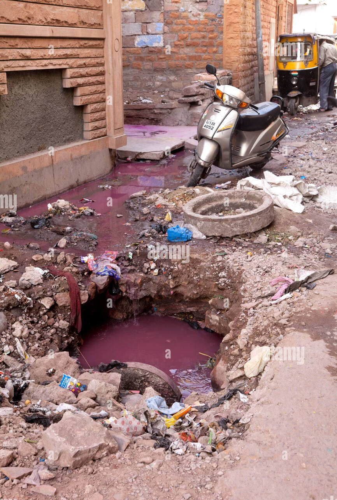

Some problems belong to non-emergency!




Your platform for reporting non-emergency issues in your community. From potholes to graffiti, our system makes reporting simple and ensures your concerns are addressed promptly.
"Community Resolve has made it so easy for me to report issues in my neighborhood. I feel more connected to my community!"
"This platform is a game changer for local community involvement. Reporting issues is quick and easy!"
"I love how responsive the local authorities are when issues are reported through Community Resolve!"
Log into your account to track the status of your complaints.
Choose the category that best matches your complaint.
Upload photos or videos to support your report.
Submit your report and track its progress in your account